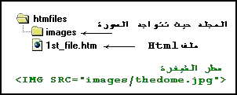
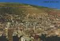

الدرس الخامس
الصور والرسومات
[الأساسيات]
[الألوان]
[الخطوط]
[الفقرات والقوائم]
[الصور والرسومات]
[الوصلات التشعبية]
[الجداول1]
[الجداول2]
[الإطارات1]
[الإطارات2]
[الإطارات3]
[وسوم من هنا وهناك]
[الخرائط الصورية]
[النماذج1]
[النماذج2]
[الوسوم الخاصة]
[الويب واللغة العربية]
[وسوم Meta]
أهلاً وسهلاً بك في الدرس الخامس من دروس HTML. في هذا الدرس سوف أقوم بالحديث عن الصور والرسومات وما يتعلق بالتعامل معها، بالإضافة إلى التعريف بأنواع الملفات الرسومية الدارجة في الإنترنت.
لقد اقتصر حديثنا عن الصور حتى الآن على إضافة خلفيات للصفحات، وكان ذلك في الدرس الثاني أما إدراج الصور ضمن الصفحات نفسها فله حكاية أخرى، أبدأ بروايتها لك الآن.
إن الوسم الرئيسي المستخدم لتعريف صورة ما داخل الصفحة هو <IMG> وهو وسم مفرد. لكن هل يكفي هذا لإدراج صورة؟ كلا، بالطبع يجب أن نحدد الصورة التي نريدها. لذلك نضيف الخاصية له SRC لتحديد موقع واسم الصورة.
الصورة التالية إسمها thedome.jpg وعندما قمت بإدراجها. كانت الشيفرة الخاصة بذلك هي
<IMG SRC="thedome.jpg">
والصيغة هذه تفترض أن الصورة موجودة في نفس الدليل الفرعي أو المجلد حيث يتواجد ملف HTML الذي أعمل عليه، وقمت باستدعاء الصورة من خلاله. لكن ماذا لو كانت الصورة في مجلد فرعي آخر؟ حسنا سوف اناقش معك حالتين لهذه المسألة.
الحالة الأولى أن تكون الصورة موجودة في مجلد متفرع عن المجلد الموجود به ملف HTML حسب الشكل التالي:

نقوم في هذه الحالة بكتابة إسم هذا المجلد تتبعه إشارة / ثم اسم الصورة.
الحالة الثانية: أن يكون ملف HTML موجوداً في مجلد ما وتكون الصورة موجودة في مجلد آخر بنفس المستوى. أي أنهما مجلدين متجاورين وليسا متفرعين أحدهما عن الآخر.
وفي هذه الحالة نكتب .. (نقطتين) لتوجيه المتصفح للخروج من المجلد الفرعي الحالي (حيث يوجد ملف HTML) ومن ثم الدخول إلى المجلد images حيث توجد الصورة.
وبشكل عام، مهما كانت مواقع تواجد الملفات فإن عملية تحديد مواقعها والوصول إليها لا تخرج عن نطاق هذا النمط من الشيفرة. أي كتابة النقطتين للخروج من مجلد فرعي، وكتابة اسم المجلد الذي يجب الدخول إليه.
إن الأبعاد الأساسية لهذه الصورة هي 200×145 بيكسل Pixel (تابع القراءة حتى نهاية هذا الدرس وأعدك أن أوضح لك ما هي وحدة البيكسل إذا كانت هذه أول مرة تتعرف فيها على هذه الوحدة) وكما تلاحظ تم إدراج الصورة مع المحافظة على هذه الأبعاد. ومع ذلك فنحن نستطيع التحكم أيضاً بها وإظهار الصورة بالحجم الذي نريده من خلال هذا الوسم. كيف؟ بإضافة الخصائص HEIGHT, WIDTH متبوعة بأرقام تمثل الإرتفاع والعرض المطلوبين.
<IMG SRC="thedome.jpg" HEIGHT="70" WIDTH="120">

<IMG SRC="thedome.jpg" HEIGHT="300" WIDTH="500">
الخاصية التالية التي تستخدم مع <IMG> هي ALT وفيها نحدد نصاً بديلاً يظهر مكان الصورة. وهذا النص يلاحظ خصوصاً عندما يكون خيار "إظهار الصور تلقائياً" غير فعال في المتصفح. كما تستطيع ملاحظته في الفترة التي تسبق تحميل الصور وخاصة في المواقع بطيئة التحميل.
<IMG SRC="thedome.jpg" ALT="The Dome Of The Rock">
عندما نقوم بإدراج صورة ضمن فقرة فإن موقع ظهورها يتحدد بالطبع حسب ترتيب ورودها في الفقرة، مثلها مثل أي كلمة أو عبارة أخرى. ونستخدم الخاصية ALIGN لتحديد محاذاة الصورة مع النص المرافق لها أو لنقل بعبارة أخرى: تحديد موقع النص الذي يليها بالنسبة لها وهي تأخذ القيم: BOTTOM, TOP, MIDDLE, LEFT, RIGHT وأوضح لك تأثير كل قيمة كما يلي:
في الحالة العادية (مثل هذه) وعندما لا نقوم بتحديد أي محاذاة فإن النص الذي يلي الصورة يظهر بمحاذاة الحافة السفلى لها. وهذه هي الحالة الإفتراضية لظهور الصور والتي تمثلها القيمة BOTTOM
<IMG SRC="image.jpg" ALIGN="BOTTOM">
TOP
وعند تحديد هذه القيمة فإن السطر الأول من النص الذي يلي الصورة يقع بمحاذاة الحافة العليا لها. أما باقي النص فيمتد أسفلها.<IMG SRC="image.jpg" ALIGN="TOP">
MIDDLE
أما عند تحديد هذه القيمة فإن السطر الأول من النص يقع بمحاذاة منتصف الصورة. كذلك فإن باقي النص يمتد أسفلها.
<IMG SRC="image.jpg" ALIGN="MIDDLE">
LEFT
هذه القيمة تؤدي إلى محاذاة الصورة إلى أقصى اليسار. مع التفاف النص الذي يليها على الجهة اليمنى ولعدة أسطر حسب ارتفاع الصورة.
<IMG SRC="image.jpg" ALIGN="LEFT">
RIGHT
أما هذه القيمة فتؤدي إلى محاذاة الصورة إلى أقصى اليمين. مع التفاف النص الذي يليها على الجهة اليسرى ولعدة أسطر حسب ارتفاع الصورة.
<IMG SRC="image.jpg" ALIGN="RIGHT">
والآن بعد أن قمنا بتحديد محاذاة الصورة نحتاج إلى تحديد المسافة الفاصلة بينها وبين النص الذي يجاورها. ونستخدم لذلك الخصائص التالية:
VSPACE: لتحديد المسافة العمودية الفاصلة بين النص والحافتين العليا والسفلى للصورة.
HSPACE: لتحديد المسافة الأفقية الفاصلة بين النص والحافتين اليمنى واليسرى للصورة.
مثال:
<IMG SRC="image.jpg" ALIGN="RIGHT" VSPACE="20" HSPACE="20">
الخاصية الأخيرة والتي تستخدم مع الوسم <IMG> هي BORDER ووظيفتها إضافة إطار حول الصور والتحكم بسُمكِه. وهذه الخاصية تستخدم بشكل خاص عند تعيين صورة ما كوصلة تشعبية. (أنظرالدرس السادس) ويتم التحكم بالسُمك من خلال إسناد رقم يمثل السُمك بالبيكسل. والقيمة الإفتراضية له هي 0 أي لا يوجد إطار حول الصورة.
مثلاٌ لإضافة إطار سُمكه 5 بيكسل نكتب الشيفرة التالية:<IMG SRC="image.jpg" BORDER="5">
والآن حان الوقت لكي نناقش معاً بعض الأمور التي تتعلق بالصور والرسومات بشكل عام.
* هل حاولت أن تتعرف على أنواع الملفات الرسومية التي تقوم بتحميلها خلال تصفحك لمواقع الإنترنت؟
يزخر عالم الكمبيوتر بالعشرات من أنواع الملفات الرسومية وتنسيقات الصور. وكل منها يختلف عن غيره من عدة نواح، أذكر لك منها: الدقة، وعدد الألوان التي يستوعبها، والحجم التخزيني للملف. لكن هناك نوعين فقط من هذه الملفات يتم تداولهما حالياً في الإنترنت وهما:
JPG, JPEG
إختصار لـِ Joint Photographic Experts Group. ويدعم هذا التنسيق صوراً بعيار 24 بت (أي 16.7 مليون لون). وميزة هذا التنسيق تتمثل في إمكانية ضغط الصور بنسب مختلفة عند تخزينها وبالتالي الحصول على صور صغيرة الحجم نسبياً.(أعني هنا حجم التخزين بالكيلوبايتات وليس أبعاد الصورة). لكن بالمقابل كلما إزدادت نسبة الضغط وصغر حجم الملف كان ذلك على حساب الجودة والوضوح.GIF
إختصار لـِ Graphical Interchange Format وأقصى عدد للألوان في هذا التنسيق هو 265 لون. ومع ذلك فإن أحجام الصور المخزنة به كبير نسبياً مقارنة بتنسيق JPG. لكن هناك مزايا رائعة ينفرد بها تنسيق GIF مما يستدعي استخدامه في صفحات الويب، أولها القدرة على تخزين صور بخلفيات شفافة Transparent Images وثانيها الصور المتحركة Animated Gifs
وتجد معلومات وافية ودروساً مفصلة حول هذه المواضيع ضمن دروس Paint Shop Pro.والآن قد تسأل، أي من هذين التنسيقين أستخدم في صفحاتي؟! لا يوجد جواب قطعي لهذا السؤال لكن إليك هاتين المعادلتين:
JPG= الصور الحقيقية ذات العدد الكبير من الألوان، وذات الأبعاد الكبيرة
GIF= الصور قليلة الألوان وصغيرة الأبعاد مثل الأزرار.
* ما هي درجة إستبانة شاشتك Resolution? إذا كنت لا تعرف الجواب قم بفتح تطبيق لوحة التحكم في ويندوز 95 وإختر أيقونة(العرض) ثم اختر التبويب (إعدادات) وهناك سوف تشاهد "مساحة سطح المكتب" الذي يدل على درجة إستبانة الشاشة، وعلى الأغلب ستكون 640×480 أو 800×600، وهناك درجات أعلى تعتمد على قدرة محول العرض. كذلك سوف تشاهد "لوح الألوان" الذي يدل على عدد الألوان التي يمكن عرضها بالإعدادات الحالية للشاشة.
أما في ويندوز 3.11 أو 3.1 فاختر أيقونة برنامج إعداد Windows من لوحة التحكم فتظهر لك قائمة تجد بضمنها نوع وإستبانة الشاشة.
هذا الحديث يقودني إلى وحدة البيكسل Pixel (ألم أعدك مسبقاً بتوضيحها). وهي اختصار لـِ Picture Element. إذا كانت شاشتك بإستبانة 640×480 فهذا يعني أنها مقسمة(نظرياً) إلى شبكة من 640 عمود و480 سطر. وبمنتهى البساطة، إن كل خلية من هذه الشبكة تمثل بيكسل وبالطبع كلما زادت الإستبانة كلما صغر حجم وحدة البيكسل.
* هل سبق لك وأن سمعت بمصطلح Thumbnail ضمن مصطلحات الإنترنت؟ حسناً، لا تلتفت إلى الترجمة الحرفية لهذه الكلمة، والتي تعني "ظفر الإبهام". فالمقصود حقيقةً بها هي تلك الصورة الصغيرة جداً التي تقوم بالنقر عليها فتؤدي إلى عرض صورة بحجم أكبر. لذلك قد يكون المصطلح الأنسب لوصفها هو "العيّنة".
(وإذا كنت قد زرت أحد المواقع الإخبارية لرأيت كيف يتم عرض عينات وصور مصغرة للقطات الأحداث وعند النقر على العينة تظهر الصورة الأصلية. إذن أنت لست مجبراً على الإنتظار لوقت طويل لحين ظهور صورة ذات حجم كبير للقطة لست معنياً بها).
ومن الواضح أن استخدام العينات مفيد وعملي جداً وأن وضعها في المواقع التي تحتوي على العديد من الصور يؤدي إلى تقليل الزمن اللازم لتحميل الصفحات وتجنب ضياع الوقت بانتظار ظهور الصور الأصلية كبيرة الحجم. لأنها تعطي الزائر الحرية في النقر عليها إذا رغب في رؤية الأصل أو تجاهلها. أما كيف يتم عمل هذه العينات؟ فذلك باستخدام أحد برامج معالجة الرسوم كبرنامج Paint Shop Pro. من خلال تصغير أبعاد الصور الأصلية إلى النسبة المطلوبة.
أعرف ماذا ستسأل الآن، ستقول ألم نتعلم قبل قليل كيفية عرض الصور مع التحكم بأبعادها؟ ألا يؤدي استخدام الخصائص WIDTH, HEIGHT إلى التحكم بحجم الصور وعرضها بنسب مصغرة حسب ما هو مطلوب؟
إن استخدامك لهذه الخصائص يؤدي إلى إظهار الصورة بحيث تبدو مصغرة، لكنك فعلياً قمت بإجبار متصفح الزائر على تحميل الصورة بالحجم والأبعاد الأصلية ثم عرضها بالحجم المصغر أي أنك في النهاية لم تحقق الغاية من وجود هذه العينات.وصلنا إلى نهاية هذا الدرس. هل أصبحت الآن تعرف كيف تدرج الصور في صفحتك؟ رائع، إذن إليك هذه المكافأة. أنقر على الصور المصغرة لتشاهد مدينتي... نابلس.




| إتش.بي بالعربية © 1998-1999 يحيى الشريف |
H.P in arabic © 1998-1999 Yahya Al-Sharif |